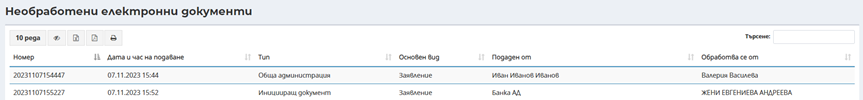

Съдебна регистратура дава възможност за извършване на търсене и преглед на всички разпореждания по регистрирани документи.
При първоначално зареждане на екран Разпореждания по регистрирани документи не се визуализират резултати. При директно натискане на бутон Филтриране , се извеждат всички регистрирани в системата разпореждания. Наборът от данни може да бъде филтриран, в зависимост от въведените критерии в полетата От дата - До дата в горната част на екрана.
След натискане на бутон Филтриране резултатите се извеждат в долната половина на екрана в табличен вид:
За всяко разпореждане се визуализира систематизирана информация по отношение на Номер на разпореждане, Дата на разпореждането, Съдия, Статус и Документ. Допълнително може да се извършва справка по номер на разпореждане, номер на документ, име на съдия. Преглед и редакция на разпореждане е възможна и чрез бутона разположен в десния край на всеки ред.
Номерът на разпореждането е активен хиперлинк към акта.
В справка необработени електронни документи се визуализират всички, електронни документи, които са постъпили в съда и не са обработени, след входиране на документа, записа се премахва от справката.
